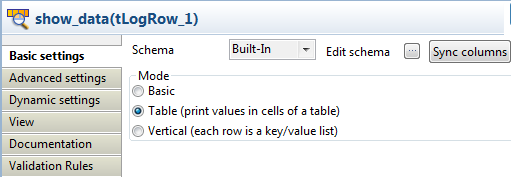

|
Famille de composant |
File | |
|
Fonction |
Le composant tFileInputJSON extrait des données JSON selon la requête JSONPath. | |
|
Objectif |
Ce composant extrait des données JSON selon la requête JSONPath, transfère les données plates à un fichier, une table de base de données, etc. | |
|
Basic settings |
Property type |
Peut être Built-in ou Repository. |
|
|
|
Built-in : Propriétés utilisées ponctuellement. |
|
|
|
Repository : Sélectionnez le fichier de propriétés du composant. Les champs suivants sont alors pré-remplis à l’aide des données collectées. |
|
|
Schema et Edit Schema |
Un schéma est une description de lignes, il définit le nombre de champs qui sont traités et passés au composant suivant. Le schéma est soit local (Built-in), soit distant dans le Repository. |
|
|
|
Built-in : Le schéma est créé et conservé ponctuellement pour ce composant seulement. Voir également le Guide utilisateur de Talend Open Studio. |
|
|
|
Repository : Le schéma existe déjà et est stocké dans le Repository. Ainsi, il peut être réutilisé dans divers projets et Job designs. Voir également le Guide utilisateur de Talend Open Studio. |
|
|
Use URL |
Cochez cette case pour récupérer les données directement à partir d’internet. URL : entrez le chemin d’accès à l’URL à partir de laquelle récupérer les données. |
|
|
Filename |
Nom du fichier à partir duquel récupérer les données. |
|
|
Mapping |
Column : montre le schéma défini dans l’éditeur Edit Schema. JSONPath Query : Spécifiez le nœud JSON contenant les données souhaitées. Pour plus d'informations concernant les expressions JSONPath, consultez http://goessner.net/articles/JsonPath/ (en anglais). |
|
Advanced settings |
Advanced separator (for numbers) |
Cochez cette option pour modifier les séparateurs utilisés pour les nombres : Thousands separator : définissez le séparateur utilisé pour les milliers. Decimal separator : définissez le séparateur utilisé pour les décimaux. |
|
|
Encoding |
Sélectionnez l’encodage à partir de la liste ou sélectionnez Custom et définissez-le manuellement. Ce champ est obligatoire pour la manipulation des données des bases de données. |
|
|
tStatCatcher Statistics |
Cochez cette case pour collecter les données de log au niveau du Job, ainsi qu’au niveau de chaque composant. |
|
Utilisation |
Le tFileInputJSON extrait des données JSON d'un fichier selon la requête JSONPath et les transfère à un fichier, une table de base de données, etc. | |
Dans ce scénario, le tFileInputJSON lit des données JSON d'un fichier .csv et un tLogRow affiche les données plates extraites.
Les données JSON contiennent des informations concernant le film Braveheart.
Déposez un tFileInputJSON et un tLogRow de la Palette dans l'espace de modélisation graphique.
Renommez le tFileInputJSON en read_JSON_data et le tLogRow en show_data.
Reliez les composants à l'aide d'un lien Row > Main.

Double-cliquez sur le tFileInputJSON pour ouvrir sa vue Basic settings.

Cliquez sur le bouton [...] à côté du champ Edit schema pour ouvrir l'éditeur du schéma.

Cliquez cinq fois sur le bouton [+] pour ajouter cinq colonnes, respectivement type, movie_name, release, rating et starring, toutes de type string, sauf la colonne rating, de type double.
Cliquez sur OK pour fermer l'éditeur.
Dans la boîte de dialogue Propagate, cliquez sur Yes pour propager le schéma aux composants suivants.

Dans le champ Filename, saisissez le chemin d'accès au fichier JSON.
Dans cet exemple, le fichier JSON se présente comme suit :
{ "type": "Action Movie", "detail": { "movies": { "name": "Brave heart", "release": "1995", "rating": "5", }, "starring": "Mel Gibson" } }Dans la table Mapping, le schéma apparaît automatiquement dans la colonne Column. Pour chaque colonne, saisissez la requête JSONPath pour récupérer les données du nœud JSON de la colonne JSONPath query.

Dans la colonne type, saisissez la requête JSONPath "type", le premier nœud des données JSON.
Pour les lignes movie_name, release et rating, saisissez les requêtes JSONPath, respectivement "$..name", "$..release" et "$..rating".
Ici, "$" fait référence au nœud racine relatif aux nœuds name, release et rating, le nœud detail. ".." fait référence à la descente récursive du nœud detail, le nœud movies.
La requête est toujours valide si vous remplacez "$..name" par "detail.movies.name".
Pour la ligne starring, saisissez la requête JSONPath "detail.starring". Notez que les nœuds type et detail appartiennent au même niveau hiérarchique.
Double-cliquez sur le tLogRow pour afficher la vue Basic settings.
Sélectionnez Table (print values in cells of a table) pour un affichage optimal des résultats.